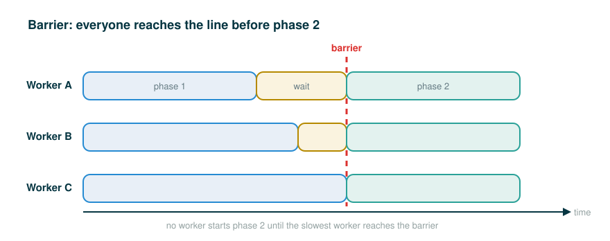

4.8.6 Barriers and Phase-Based Parallel Work
By the end of this lesson you will be able to do four things. You will be able to explain what a barrier is and how it splits a parallel program into phases. You will be able to read the official two-counter barrier example line by line and predict its exact output. You will be able to say precisely how a barrier differs from a lock, and choose the right one. And you will be able to describe how a real particle simulator uses barriers to keep a read phase and a write phase from overlapping, which sets up the circular pipeline of processes you will meet next.
The single idea underneath all of this is simple: sometimes the safe way to share data is not to guard each access one thread at a time, but to make every thread finish one stage of work before any thread starts the next.
▶A Real-World Analogy: The Group Hike Checkpoint
Picture a group hiking a trail in two legs. On the first leg, the hikers spread out and walk at their own pace. Fast walkers pull ahead, slower ones fall behind, and nobody waits for anybody. That is efficient: everyone makes progress at once.
But the second leg crosses a river, and the rule is that the whole group crosses together. So at the riverbank there is a checkpoint. A hiker who arrives early does not cross. They wait. They keep waiting until the last member of the group reaches the checkpoint. Only when everyone has arrived does the entire group cross together and begin the second leg.
That checkpoint is a barrier. The key features carry over exactly. Inside a leg, the hikers are independent and run in parallel. At the boundary between legs, every hiker must arrive before any hiker continues. The early arrivals pay the cost of waiting so that no one starts the next leg with stale information about where the group is.
What a Barrier Is
A barrier divides a program into phases by requiring all threads to reach it before any of them can proceed. Code that runs after a barrier cannot be concurrent with code that ran before the barrier. That is the whole guarantee, and it is worth saying twice: once a barrier separates two pieces of code, nothing after the barrier can overlap in time with anything before it.
This gives you a different tool for avoiding conflicting access to shared data than the locks you have already seen. The idea is to split the program into phases and arrange things so that shared data is mutated in a phase during which no other thread is reading it. A barrier is what enforces the boundary between those phases.
Phase 1:
every thread works independently
Barrier:
each thread waits here until ALL threads have arrived
Phase 2:
every thread continues, guaranteed not to overlap Phase 1Here is the visual model of that timeline:

Python provides this tool as threading.Barrier. You create one by telling it how many threads, called parties, must arrive before it lets anyone through. Then every thread calls one method, wait(), at the phase boundary.
Follow the Line: Creating a Barrier
The first construct is the barrier object itself. Walk it token by token.
# (1)
barrier = threading.Barrier(2)
barrier = threading.Barrier(2)
├─ barrier ............ the name we bind the new barrier object to
├─ = ................. assignment: bind the name on the left to the value on the right
├─ threading ......... the standard-library threading module
├─ . ................. attribute access: reach into the module
├─ Barrier ........... the Barrier class that builds a phase-boundary object
├─ ( ................. begins the arguments
├─ 2 ................. the number of parties: how many threads must arrive
├─ ) ................. ends the arguments
└─ creates a barrier that releases all threads only once 2 of them are waitingThe number 2 is the contract. This barrier will hold any thread that arrives until exactly two threads are waiting on it, and then it releases both at once. If you tell it to expect two arrivals but only one thread ever shows up, that one thread waits forever.
Follow the Line: Waiting at a Barrier
The second construct is the call each thread makes when it reaches the boundary.
# (2)
barrier.wait()
barrier.wait()
├─ barrier ........... the Barrier object created above
├─ . ................. attribute access: reach into the object
├─ wait .............. the method that blocks this thread at the phase boundary
├─ ( ................. begins the arguments
├─ ) ................. ends the arguments: no arguments are needed
└─ pauses THIS thread until the required number of threads have all called wait()Read barrier.wait() as "pause this thread here until every expected thread has reached this same line." The early callers block. The final caller arrives, the count is complete, and all of them resume together. After that release, the barrier resets, ready to coordinate the next phase boundary.
A Warm-Up: Two Phases by Hand
Before the official example, here is a tiny non-threaded sketch to fix the shape of phase-based work in your mind. This is a simplified bridge example of my own, not from the source; it just shows the rhythm of "everyone finishes a phase, then everyone moves on."
# (3)
arrived = []
released = []
workers = ["A", "B", "C"]
def reach_barrier(worker):
arrived.append(worker)
if len(arrived) == len(workers):
for name in arrived:
released.append(name + " enters phase 2")
reach_barrier("A")
reach_barrier("B")
reach_barrier("C")
print(arrived)
print(released)
Each call to reach_barrier records one worker's arrival. Nothing is released into phase 2 until the list of arrivals is as long as the list of workers. Only the call that brings the final worker, "C", triggers the release of the whole group. That is exactly the barrier rule, stripped of threads so you can see it plainly: release happens only when the last expected worker arrives.
Running it prints:
['A', 'B', 'C']
['A enters phase 2', 'B enters phase 2', 'C enters phase 2']This sketch is deterministic because there are no real threads, but it captures the contract a threading.Barrier enforces when there are.
The Official Barrier Example
Now the real thing, reproduced exactly from the source. Two threads each run the same count function. Each thread repeatedly reads the other thread's counter, waits at a barrier, then writes its own counter, then waits at a second barrier.
# (4)
counters = [0, 0]
barrier = threading.Barrier(2)
def count(thread_num, steps):
for i in range(steps):
other = counters[1 - thread_num]
barrier.wait() # wait for reads to complete
counters[thread_num] = other + 1
barrier.wait() # wait for writes to complete
def threaded_count(steps):
other = threading.Thread(target=count, args=(1, steps))
other.start()
count(0, steps)
print('counters:', counters)
threaded_count(10)
In this example, reading and writing to shared data happen in different phases, separated by barriers. The reads all happen in one phase; the writes all happen in the next. The writes occur in the same phase, but they are disjoint: thread 0 only ever writes counters[0] and thread 1 only ever writes counters[1]. That disjointness is what makes it safe to let both writes happen in the same phase without further synchronization, because the two threads never write the same slot. Because this code is properly synchronized, both counters will always be 10 at the end.
Follow the Line: The Read Inside the Loop
The line that makes the phase structure necessary is the read at the top of the loop body. Walk it token by token for thread number 0.
# (5)
other = counters[1 - thread_num]
other = counters[1 - thread_num]
├─ other ............. a local name holding the value this thread just read
├─ = ................. assignment: bind other to the value on the right
├─ counters .......... the shared two-element list [count0, count1]
├─ [ ................. begins the index
├─ 1 ................. the literal one
├─ - ................. subtraction
├─ thread_num ........ this thread's id, 0 or 1
├─ ] ................. ends the index
└─ reads the OTHER thread's counter (1 - 0 = 1 for thread 0; 1 - 1 = 0 for thread 1)The expression 1 - thread_num flips 0 into 1 and 1 into 0, so each thread reads its partner's slot, never its own. This is the read that must not overlap with the partner writing that same slot. The first barrier.wait() is what guarantees it does not: both threads finish reading before either one is allowed to write.
Why the Counters End at Exactly 10
Trace one trip through the loop with the phases in mind. Both threads enter the loop body and read the other's counter into their local other. Both then hit the first barrier and wait, so neither writes until both reads are done. Once released, each thread writes other + 1 into its own slot. Both then hit the second barrier and wait, so neither starts the next read until both writes are done.
Because the loop runs steps times and each iteration adds exactly one to each counter in a cleanly separated write phase, after 10 iterations each counter has been incremented 10 times. Both end at 10. The barriers are doing the essential work: without the phase boundaries, one thread could read a slot while the other is halfway through changing it, and the final values would be unpredictable.
A Step-by-Step Trace of One Iteration
The source page does not trace this example; the numbered interleaving below is an illustration of my own to make the phase ordering concrete. The starting value 5 and the intermediate states are numbers I chose, not source content; only the official count function being traced comes from the source. Suppose both counters currently hold 5. Read phase first, then write phase, with the barriers enforcing the order.
Start: counters = [5, 5]
1. Thread 0 reads other = counters[1] -> other_0 = 5
2. Thread 1 reads other = counters[0] -> other_1 = 5
3. Thread 0 reaches the first barrier and waits.
4. Thread 1 reaches the first barrier; both have arrived, both are released.
5. Thread 0 writes counters[0] = other_0 + 1 -> counters = [6, 5]
6. Thread 1 writes counters[1] = other_1 + 1 -> counters = [6, 6]
7. Thread 0 reaches the second barrier and waits.
8. Thread 1 reaches the second barrier; both have arrived, both are released.
End of iteration: counters = [6, 6]The crucial point is steps 3 and 4. Even though thread 1 read at step 2 and could in principle have rushed ahead to write, the first barrier holds it until thread 0 has also finished reading. So no thread can ever read a value that the other thread has already bumped in the same iteration. Each iteration cleanly moves both counters up by one, which is why ten iterations land both at 10.
Why Barriers Are Different from Locks
It is easy to lump barriers and locks together because both are synchronization tools, but they answer different questions.
A lock protects a small critical section by letting one thread in at a time. It answers: "Who may touch this shared resource right now?" Only the holder may proceed; everyone else waits their turn, and turns are taken one by one.
A barrier coordinates phases by making every thread stop at the same line until all of them arrive. It answers: "Has every worker finished the previous phase?" No one proceeds until the whole group is ready, and then everyone proceeds together.
Lock: one-at-a-time access to a shared resource
Barrier: everyone-waits-then-all-continue at a phase boundaryThe difference in shape matters in practice. A lock serializes access, so threads take turns and lose some parallelism on the guarded section. A barrier keeps threads fully parallel inside a phase and only synchronizes them at the boundaries between phases. When the natural structure of your problem is "a stage everyone does independently, then a hard line, then the next stage," a barrier fits the structure and a lock does not.
The Particle Simulator: Phase-Based Work for Real
Here is the example that motivates the whole technique: a program that simulates many particles moving and pushing on each other. The multithreaded particle simulator uses a barrier in a similar fashion to synchronize access to shared data. This is the motivating example behind the whole technique, so it is worth following closely.
In the simulation, each thread owns a number of particles, all of which interact with each other over the course of many discrete timesteps. A particle has a position, a velocity, and an acceleration. In each timestep, a new acceleration is computed for a particle based on the positions of the other particles. The velocity of the particle is then updated according to that acceleration, and its position according to its velocity.
The danger is shared data: every thread needs to read every particle's position to compute forces, while every thread is also updating its own particles' positions. If a position update from one thread lands in the middle of another thread's force computation, the simulation reads a mixture of old and new positions and drifts into nonsense. The fix is exactly the two-phase structure of the counter example:
Read phase:
every thread reads all particles' positions
each thread updates ITS OWN particles' accelerations
(these are disjoint writes, so they need no synchronization)
Barrier.
Write phase:
each thread updates ITS OWN particles' velocities and positions
(again disjoint writes, protected from the read phase by barriers)
Barrier, then repeat for the next timestep.As with the simple counter example, there is a read phase in which all particles' positions are read by all threads. Each thread updates its own particles' acceleration in this phase, but since these are disjoint writes, they need not be synchronized with one another. In the write phase, each thread updates its own particles' velocities and positions. Again, these are disjoint writes, and they are protected from the read phase by barriers.
This is phase-based parallel work. Threads are fully independent inside a phase, exactly like hikers on one leg of the trail, and the barriers are the checkpoints that keep one phase from bleeding into the next.
Where This Leads: The Circular Pipeline
Barriers solve the phase problem when threads share one block of memory. But separate processes do not share memory, so they cannot meet at a shared threading.Barrier. They have to pass data to each other explicitly instead.
The multiprocess version of the particle simulator does exactly this: it uses pipes to communicate particle positions between processes in each timestep, and in fact it uses pipes to set up an entire circular pipeline between processes, in order to minimize communication. Each process hands its particle data to the next process around a ring, so over one trip around the circle every process sees every other process's particles without anyone broadcasting to everyone at once.
You do not need the pipe machinery yet; that is the subject of the next lesson on message passing. The point for now is the contrast. A barrier coordinates shared-memory threads by making them wait together at a line. A circular pipeline coordinates separate processes by passing data hand to hand around a ring. Both are answers to the same underlying question of how to update shared information without letting reads and writes collide.
⚠Common Beginner Traps
- Confusing a barrier with a lock. A lock lets one thread through a critical section at a time; a barrier holds the entire group at a line until everyone arrives. They answer different questions and are not interchangeable: guarding the counter writes with a lock instead of separating reads and writes with a barrier lets one thread race ahead and read a slot its partner is mid-update, so the counters end at unpredictable values rather than
10. - Setting the wrong number of parties.
threading.Barrier(n)waits for exactlynarrivals. Ifnis larger than the number of threads that ever reach it, the waiting threads block forever. - Forgetting the second
barrier.wait(). In the official example, the first barrier separates reads from writes and the second separates writes from the next round of reads. Drop either one and a thread can read a slot while its partner is still writing it. - Thinking the writes need a lock. In the official example the two writes happen in the same phase but touch different slots, so they are disjoint and safe without a lock. A barrier handles the read/write ordering; disjointness handles the write/write safety.
- Placing the barrier in the wrong spot. A barrier must sit exactly on the phase boundary. A barrier one line too early or too late protects the wrong thing.
- Reaching for a barrier when a lock or a queue is the natural fit. Use a barrier when the problem really has independent phases separated by hard boundaries.
✓Check Your Understanding
- Suppose the phase-based round from the checkpoint starts from
counters = [3, 8]instead of[0, 0]. What doescountershold after a single round? - Why does the official
countfunction callbarrier.wait()twice inside its loop, rather than once? - The two threads both write to
countersin the same phase. Why is that safe without a lock? - How is a barrier different from a lock, in terms of the question each one answers?
- In the particle simulator, what happens in the read phase and what happens in the write phase, and what keeps them from overlapping?
- Why can two separate processes not simply share a
threading.Barrier, and what does the multiprocess particle simulator use instead?
Show the answers
[9, 4]. In the read phase each worker reads the OTHER slot, soread0iscounters[1](8) andread1iscounters[0](3); the write phase then storesread0 + 1intocounters[0](9) andread1 + 1intocounters[1](4).- The first
barrier.wait()makes both threads finish reading before either writes; the second makes both threads finish writing before either starts the next round of reads. Together they keep reads and writes from overlapping. - The writes are disjoint: thread 0 only writes
counters[0]and thread 1 only writescounters[1]. Because the two threads never write the same slot, there is no write/write conflict to lock against. - A lock answers "who may touch this shared resource right now?" and admits one thread at a time; a barrier answers "has every worker finished the previous phase?" and holds the whole group until all arrive, then releases them together.
- In the read phase, all threads read all particles' positions and each thread updates its own particles' accelerations (disjoint writes). In the write phase, each thread updates its own particles' velocities and positions (also disjoint). Barriers between the phases keep the read phase and write phase from overlapping.
- Separate processes do not share memory, so they cannot wait on the same in-memory barrier object. The multiprocess particle simulator uses pipes to pass positions between processes, arranged as a circular pipeline around a ring to minimize communication.
§Summary
A barrier divides a parallel program into phases by requiring every thread to arrive before any thread proceeds, so code after the barrier can never overlap code before it. This is a different strategy from locking: instead of guarding a shared resource one thread at a time, you split the work into stages where reads and writes live in separate phases. The official two-counter example shows the pattern exactly. Each thread reads its partner's counter, waits at a barrier so all reads finish, writes its own counter, and waits at a second barrier so all writes finish; because the writes are disjoint and the phases are cleanly separated, both counters always end at 10. The multithreaded particle simulator scales this up: a read phase where threads read positions and update their own accelerations, a barrier, then a write phase where threads update their own velocities and positions, all of them disjoint writes protected by barriers. When the threads become separate processes that cannot share memory, this same need is met by passing data through pipes arranged as a circular pipeline, which is where the next lesson begins. Locks protect one-at-a-time access; barriers protect the order of phases.
▶Step-Through Checkpoint
This deterministic model has no real threads, so it runs the same way every time. It mirrors the official two-counter example by running the read phase for both workers first, then the write phase for both, exactly as two barriers would force. Stepping through it draws the environment diagram of the phase structure: the global frame holds counters pointing at one shared two-element list on the heap, and each two_phase_round frame first binds the locals read0 and read1 from that shared list (the read phase) before writing back into its two disjoint slots counters[0] and counters[1] (the write phase), so you can see no write lands until both reads are taken. Before you step through it, write down two predictions: what counters holds after a single call to two_phase_round, and what it holds after all ten rounds.
# (6)
counters = [0, 0]
def two_phase_round():
# Read phase: both workers read the OTHER counter before anyone writes.
read0 = counters[1 - 0]
read1 = counters[1 - 1]
# (a barrier would go here: all reads are now complete)
# Write phase: each worker writes only its own slot (disjoint writes).
counters[0] = read0 + 1
counters[1] = read1 + 1
# (a second barrier would go here: all writes are now complete)
for i in range(10):
two_phase_round()
print('counters:', counters)
Step through it and check your predictions. Running this prints counters: [10, 10], the same result the official threaded version is guaranteed to produce. The two named locals read0 and read1 stand in for the read phase that the first barrier protects, and the two assignments to counters stand in for the disjoint write phase that the second barrier protects. Seeing the counters climb together, one per round, is the whole point of the barrier: reads and writes never interleave, so both slots reach 10.